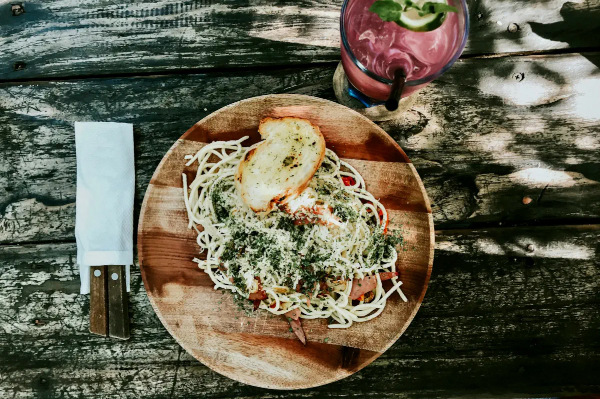

Aglio Olio Daun Jeruk

Description
A quick and easy Indonesian twist to the popular Italian dish, spaghetti aglio e olio. Here, daun jeruk (kaffir lime leaves), chillies and mushroom powder are added to adapt to the local palate.
Ingredients
- 250 gr spaghetti
- 8 garlic cloves, thinly sliced
- 6 kaffir lime leaves, stem removed, very thinly sliced
- 1 small red chilli, thinly sliced
- 2 bird's eye chillies, finely chopped (optional)
- salt to taste
- ¼ tsp white pepper powder
- 1 tsp mushroom stock powder
- 3 tbsp cooking oil
Home